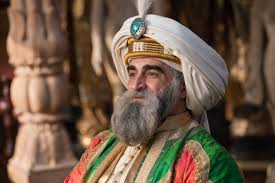
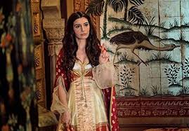
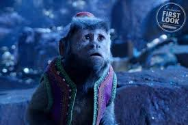

Naomi Scott
Naomi Grace Scott was born on May 6, 1993. Naomi Grace Scott is a British actress and singer. She is known for starring as Princess Jasmine in Disney's musical fantasy film, Aladdin.

Mena Massoud
Mena Massoud was born on September 17, 1991. He is known for starring as Aladdin in Disney's musical fantasy film. Massoud said that Aladdin "sees a future for himself that's greater than what's been set out for him at the present moment.
Will Smith
Williard Smith Junior was born on September 25, 1968. He is known for starring as Genie in Disney's musical fantasy film, Aladdin. The Sultan's daughter and the feisty princess of Agrabah who wants to have a say in how she lives her life.

Marwan Kenzari
Marwan Kenzari was born on January 16, 1983. Marwan Kenzari is a Dutch actor and comedian. He is known for starring as Jafar in Disney's musical fantasy film, Aladdin. A nefarious and deceptive sorcerer, the Grand vizier of Agrabah, and the Sultan's chief advisor.
Navid Negahban
Navid Negahban was born on June 2, 1968. He is known for starring as The Sultan in Disney's musical fantasy film, Aladdin. The wise and noble ruler of Agrabah who is eager to find a capable husband for his daughter Jasmine.

Nasim Pedrad
Nasim Pedrad was born on November 18, 1981. Nasim Pedrad is an American actress and comedian best known for her five seasons as a cast member on Saturday Night Live from 2009 to 2014. She is known as Dalia. Jasmine's loyal handmaiden and confidante.

Nurman Acar
Nurman Acar was born on October 7, 1974. He is known for starring as Jafar's right-hand man in Disney's musical fantasy film, Aladdin. The head of the palace guards who is loyal to the Sultan of Agrabah, as his father worked for the Sultan as a palace servant.
Frank Welker
Frank Welker reprises his three roles as:Abu, Aladdin's kleptomaniac but a loyal pet.

Rajah, Jasmine's protective pet who communicates through growling, roaring, and grunting.
Cave of Wonders,A sand guardian that resembles the giant head of a lion.
Alan Tudyk
-
He is starring as Iago's Voice, it is Jafar's sardonic and intelligent scarlet macaw companion.